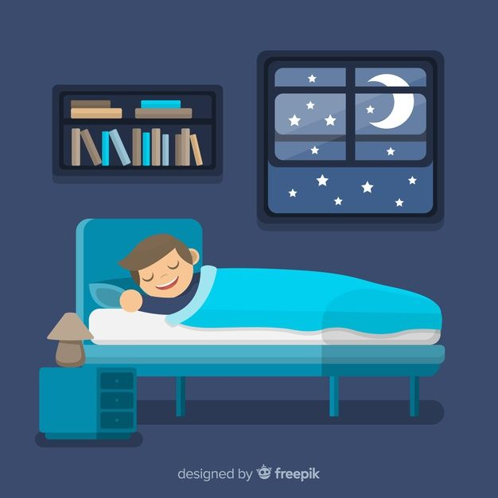
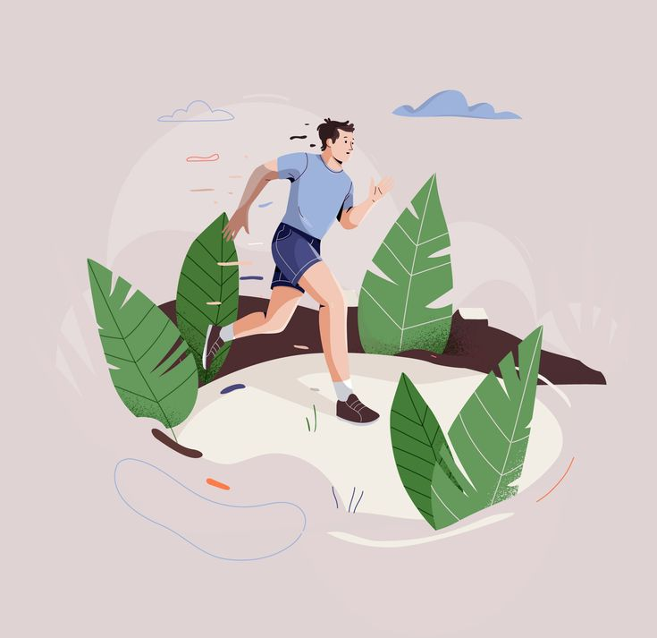
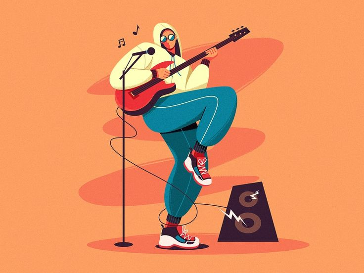
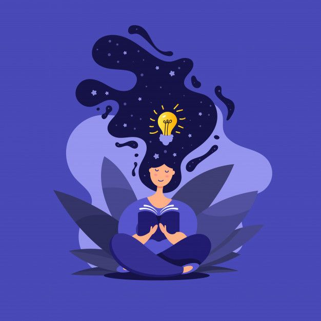
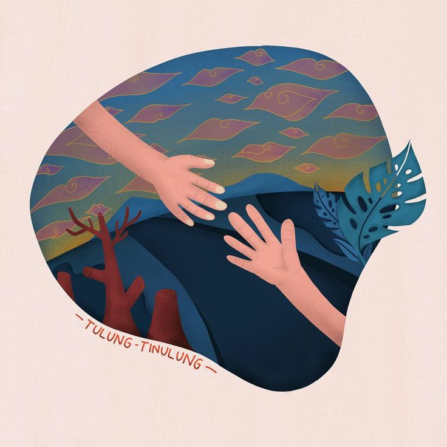
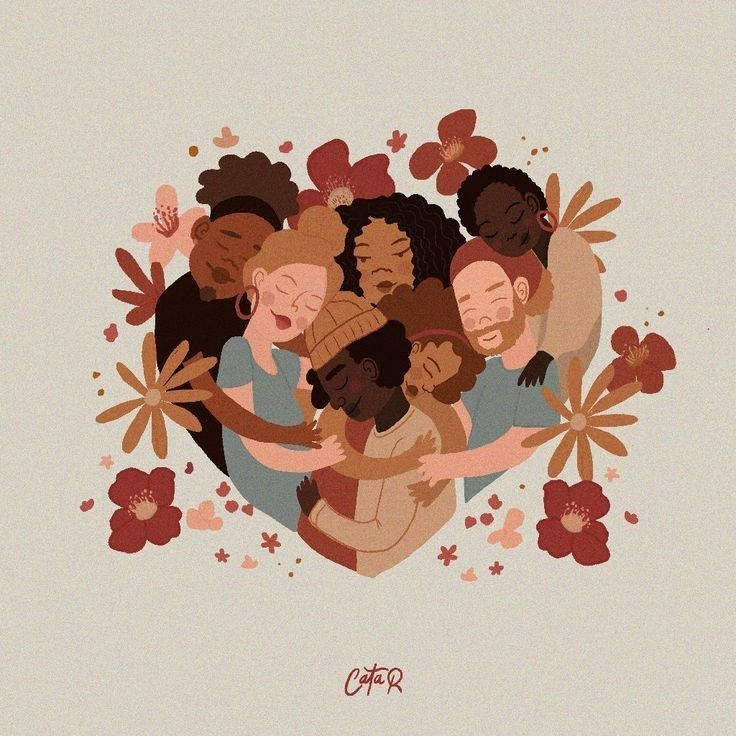

MENTAL | Keep Yourself
HEALTH
(Kesehatan Mental)
---------------------------------------------------------------------------------------------------------------
Content
KESEHATAN MENTAL
Kamu, Dirimu, Sama Seperti Siapapun di Alam Semesta, Berhak Mendapat Cinta dan Kasih Sayang
Kesehatan Mental / Mental Health
Kesehatan mental adalah keadaan kesejahteraan emosional, psikologis, dan sosial seseorang.
Ini mencakup kemampuan individu untuk mengatasi stres, berpikir dengan jernih, merasa bahagia, menjalin hubungan yang sehat, dan beradaptasi dengan perubahan dalam hidup.
Kesehatan mental merujuk pada kondisi kesejahteraan emosional,
psikologis, dan sosial seseorang. Ini melibatkan kemampuan individu untuk mengatasi stres, mengelola emosi, berinteraksi dengan orang lain, dan membuat keputusan.
Kesehatan mental yang baik tidak hanya berarti tidak adanya gangguan mental, tetapi juga mencakup kestabilan emosional, rasa percaya diri,
kemampuan beradaptasi dengan perubahan hidup, dan kualitas hubungan interpersonal yang baik. Penting untuk diingat bahwa kesehatan mental adalah bagian integral dari
kesehatan secara keseluruhan dan memainkan peran penting dalam kehidupan sehari-hari seseorang. kesehatan jiwa mencakup aspek-aspek fisik, psikologis, sosial.
Pentingnya Kesehatan Mental
Kesejahteraan Emosional: Orang dengan kesehatan mental yang baik cenderung lebih bahagia, tenang, dan mampu mengatasi stres.
Hubungan yang Sehat: Hubungan interpersonal yang baik memerlukan kesehatan mental yang stabil. Kemampuan untuk berkomunikasi dengan baik, empati, dan memahami perasaan orang lain sangat penting dalam menjaga hubungan yang sehat.
Produktivitas: Kesehatan mental yang baik dapat meningkatkan produktivitas di tempat kerja dan membantu seseorang mencapai tujuan pribadi dan profesionalnya.
Kreativitas: Kesehatan mental yang baik seringkali terkait dengan tingkat kreativitas yang lebih tinggi, karena seseorang lebih terbuka terhadap ide-ide baru dan berani mengambil risiko.
Macam-Macam gangguan mental :
Gangguan Kecemasan : Ini termasuk gangguan seperti gangguan kecemasan umum (GAD), gangguan panik, fobia, dan gangguan obsesif-kompulsif (OCD). Orang dengan gangguan kecemasan cenderung mengalami kecemasan yang berlebihan dan sering kali merasa takut atau khawatir tanpa alasan yang jelas.
Gangguan Mood : Ini melibatkan perubahan dalam suasana hati yang mencakup depresi (gangguan depresi mayor) dan mania (gangguan bipolar). Penderita depresi cenderung merasa sedih, kehilangan minat, dan kelelahan, sementara penderita gangguan bipolar mengalami perubahan drastis antara mania (perasaan euforia berlebihan) dan depresi.
Gangguan Makan : Termasuk anoreksia nervosa, bulimia nervosa, dan gangguan makan lainnya. Orang dengan gangguan makan mengalami hubungan yang tidak sehat dengan makanan, berfokus pada berat badan, dan sering kali mengalami gangguan emosional terkait dengan makanan.
Gangguan Psikotik : Ini melibatkan gejala psikotik seperti halusinasi (mendengar atau melihat sesuatu yang tidak ada) dan delusi (keyakinan yang salah). Schizophrenia adalah salah satu contoh gangguan psikotik yang serius.
Gangguan Kepribadian : Termasuk gangguan kepribadian borderline, antisosial, histrionik, dan lainnya. Orang dengan gangguan kepribadian sering memiliki pola perilaku yang tidak stabil dan dapat merasa sulit untuk menjaga hubungan sosial yang sehat.
Gangguan Kepribadian Obsesif-Kompulsif (OCD) : Ini melibatkan pola pikiran dan perilaku yang obsesif dan kompulsif. Orang dengan OCD sering merasa terjebak dalam siklus pikiran yang mengganggu dan ritual yang mereka lakukan untuk meredakan kecemasan.
HOW TO SELF CARE?
Berbicara dengan Seseorang

Tidur yang Cukup setiap hari

Berolahraga minimal 15 menit sehari

Melakukan kegiatan Menyenangkan

Meditasi dan Relaksasi

Pembatasan Stigma
Luangkan Waktu untuk Diri Sendiri

Terhubung dengan komunitas
Kamu dapat mencatat tanggal, perasaan mood pada tanggal (seperti Baik, Sedang, Buruk, Sangat Baik), dan aktivitas yang mungkin berpengaruh terhadap mood. Dengan cara ini, Kamu dapat melihat pola dan tren yang mungkin terkait dengan kesehatan mental.
Kamu juga dapat menambahkan kolom-kolom lain sesuai kebutuhan, seperti tidur, pola makan, atau faktor lain yang dapat memengaruhi kesehatan mental. Ini adalah alat sederhana yang dapat membantu Anda memahami lebih baik bagaimana Kamu merasa dari waktu ke waktu
dan mengidentifikasi apa yang berfungsi dan apa yang tidak dalam menjaga kesehatan mental.
Kamu dapat mencatatnya dalam sebuah tabel untuk memantau kondisi kesehatan sehari-hari :
 | Keep Yourself
| Keep Yourself